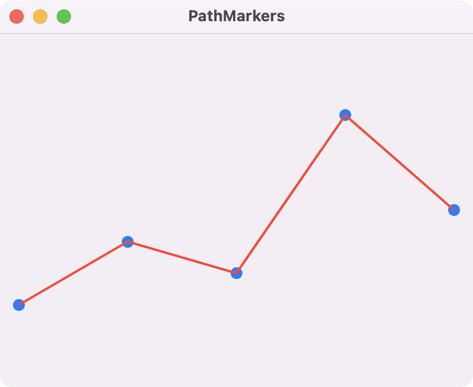

Markers can be added to a line path by stacking two views in a ZStack. The line is drawn as a path using LineShape while the markers (filled circles) are created in the MarkersView.

import SwiftUI
struct MarkersView: View {
let values: [Double]
var body: some View {
GeometryReader { geom in
let xStep = geom.size.width / CGFloat(values.count - 1)
ForEach(0..<values.count) {
Circle()
.fill(.blue)
.frame(width: 10)
.position(x: CGFloat($0) * xStep, y: (1 - values[$0]) * geom.size.height)
}
}
}
}
struct LineShape: Shape {
let values: [Double]
func path(in rect: CGRect) -> Path {
let xStep = rect.width / CGFloat(values.count - 1)
var path = Path()
path.move(to: CGPoint(x: 0.0, y: (1 - values[0]) * rect.height))
for i in 1..<values.count {
let pt = CGPoint(x: Double(i) * xStep, y: (1 - values[i]) * rect.height)
path.addLine(to: pt)
}
return path
}
}
struct LineView: View {
let values: [Double]
var body: some View {
ZStack {
MarkersView(values: values)
LineShape(values: values)
.stroke(.red, lineWidth: 2)
}
}
}
struct ContentView: View {
var body: some View {
LineView(values: [0.2, 0.4, 0.3, 0.8, 0.5])
.padding()
.frame(minWidth: 400, minHeight: 300)
}
}
🍎 🖥 Swift Programming for macOS
by Gavin Wiggins © 2022